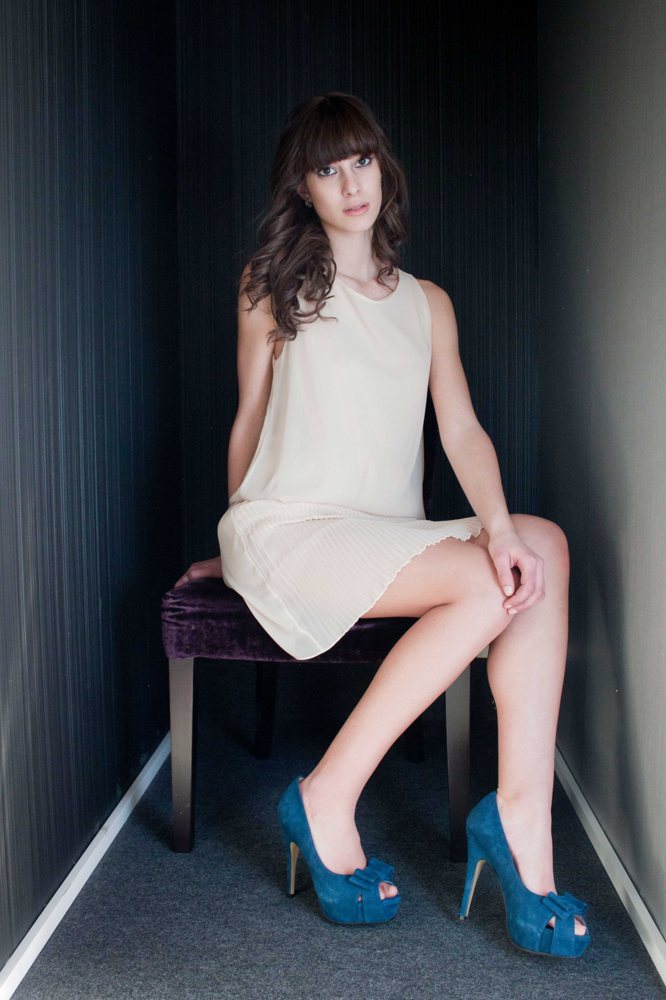
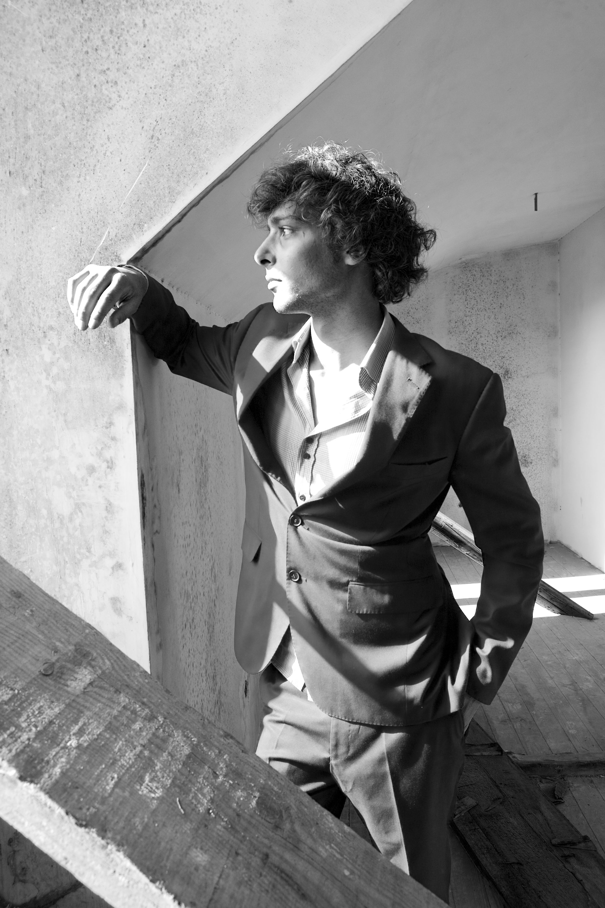
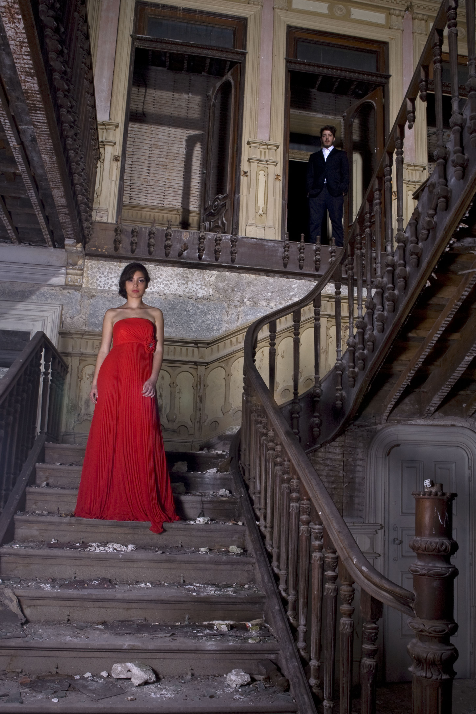
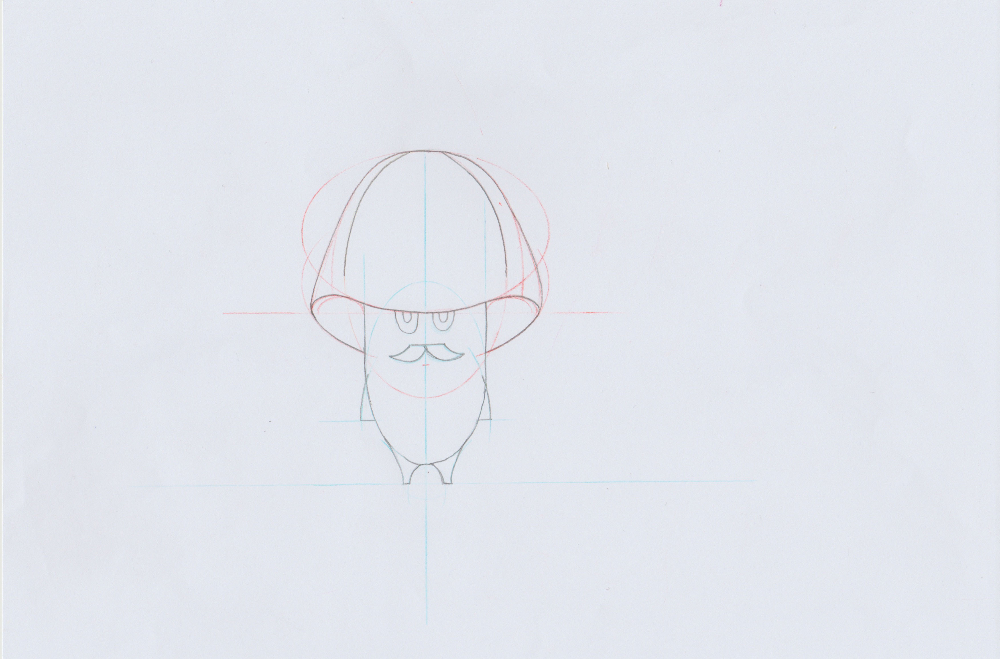
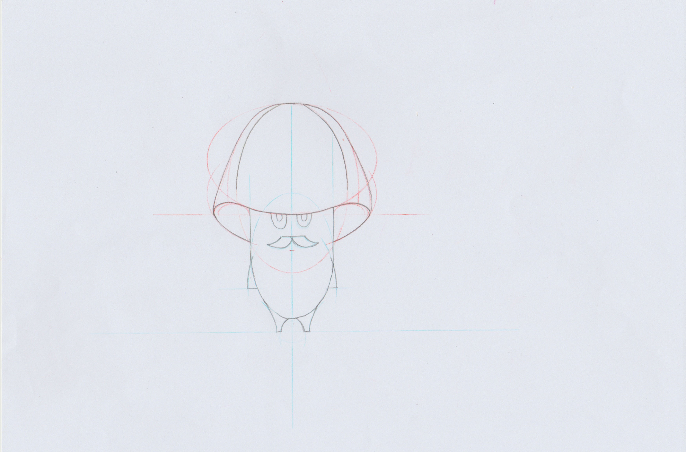

"Fashion"
Final project in the first year of the multimedia technician school, with the topic fashion photography. The art that unites two worlds: On the one hand the photography itself, and on the other the fashion that is the highest aesthetic sense.
This project allowed me to put together the creativity, technique and passion that allows me to make a product known to the general public. It was not easy at all, I had to provide everything from sponsorships, models, scenaries, lights for post-production etc…




 
